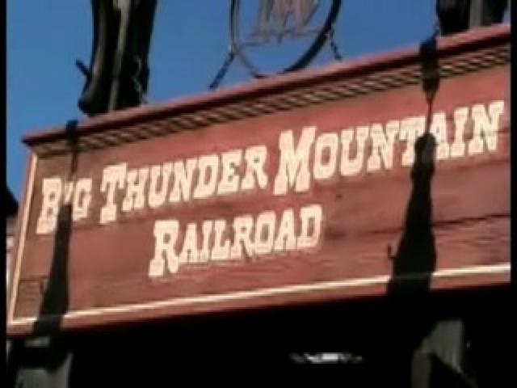

| |
Big Thunder Mountain Review

We're here at the Walt Disney World Resort. Today's ride we'll be reviewing for you is Big Thunder Mtn. One of the finest mine trains. After heading into the underground station, you get in the cars. Then you head into a tunnel. You go through a couple turns and hear some bats before you reach the lifthill. And unlike in California, there is no screaming hillbilly. Once you reach the lifthill, you see all sorts of waterfalls around it. However, after climbing the lifthill, you slowly rise out of the tunnel and head for the first drop. But as you are about to go through it, you notice that something is not right. Then you twist out of the first drop. As you spiral down gaining speed, it all comes clear to you now. EVERYTHING HERE IS BACKWARDS!!!!! Then you go around a left turnaround. Then you get a good pop of airtime afterwards. While it's not Coaster Ejector airtime, it's still alot of fun. Then you turnaround again, and dip into a small tunnel. We then turn and head through a few more dips before heading into another tunnel. That tunnel includes a turn that leads you into a brake run. After the brake run, you turnaround and climb lifthill #2. During that climb, you can see the track you're about to go through. At the top, you once again, notice that something is not right. You then realize that the Dynamite Goat is missing from the Florida Thunder Mtn. This knocks Florida Thunder Mtn a few points as Dynamite Goat kicks ass. But at least the theming here is nice. Anyways, you are twisting down the second drop. After that, you head up and pass the lifthill. Then you just slam into Thunder Mtn's FAKE HELIX OF DEATH!!!!!! This fake helix of death is extra cool since it has two tunnels in it! After that winding and spiraling, you bounce up into a little hill before hitting the brakes. Then you turnaround and go up lifthill #3. This is the best of the 3 lifthills as the lifthill here actually shakes rather than just showing the shadows of rocks shaking!! This makes up those extra points lost from the lack of Dynamite Goat. Then you slowly crest the lifthill. You wait for the rest of the car to leave the lift before you head down another twisted drop. Then you go through another turnaround, but that turnaround is actually a helix because before you know it, your on a bridge above where you were before. Then you head for the final twisted drop with the little fake water splash. Then you glide through the brake run and cruise underground to the station. Here, Thunder Mountain is *slightly* better than Californias because of it's shaking 3rd lifthill and better theming. Though CA has the advantage of having Dynamite Goat. But really, the Paris Thunder Mtn is the best one and kicks both Florida and California's asses. This is a fantastic mine train, a real Disney Classic and I highly reccomend riding it if you're visiting the Walt Disney World Resort.
7/10
Location: Walt Disney World Resort
Opened: 1980
Built by: Vekoma
Last Ridden: November 21, 2007
Big Thunder Mountain Photos

Home
|